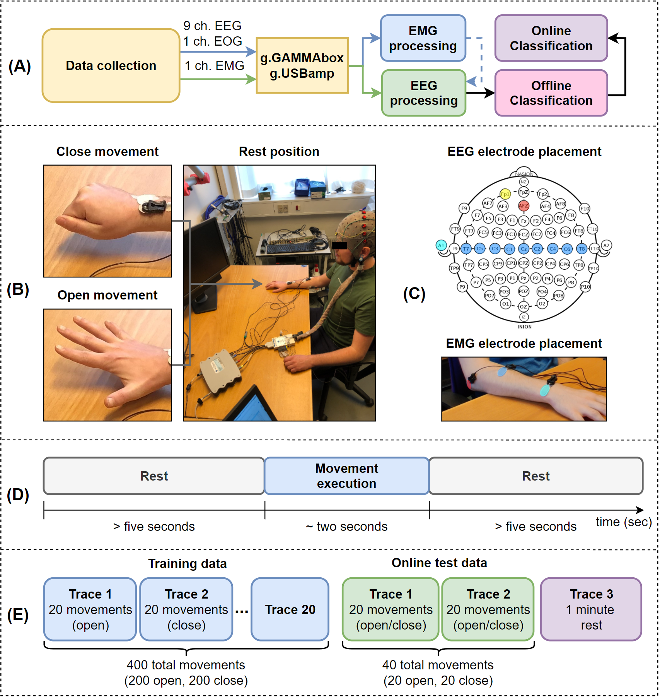

Online Classification of Movement Intention:
An end-to-end EEG-based BCI Pipeline

Abstract
Brain-computer interfaces (BCIs) based on electroencephalography (EEG) allow users to control external instruments with brain signals and can be used to aid in the
rehabilitation of patients with loss of motor function. An online
application of such a system requires a robust classifier, but only
few studies focus on evaluating BCI systems for online use. This
paper proposes an end-to-end BCI pipeline for online application,
which encompasses extensive preprocessing and automatic labeling of EEG signals and either a state-of-the-art deep-learning
feature extraction method and classifier or a gradient-based
classifier. An online simulation suite is applied to evaluate the
system’s performance in an online setting. We collect 220 traces,
each consisting of 20 self-paced motor task executions, from
10 subjects for use in evaluations. We construct the pipeline
to make the process as hands-off as possible. The pipeline
automatically labels training data for the classifiers by crossreferencing EEG and electromyography (EMG) data recorded
simultaneously. Our automatic labeling method shows that it can
contend well with noisy data compared to an earlier method. The
pipeline includes a ViTransformer deep-learning classifier and
XGBoost, a gradient-based classifier. We evaluate the classifiers
online by simulating the classifiers’ rate to receive input data. Our
experiments show that a well-performing offline classifier does
not necessarily translate to a well-performing online classifier.
From online simulation experiments, XGBoost achieves the best
results where it predicts 66.7% of the movements and achieves an
81.5% ± 4.2 precision, a 0.45 s ± 0.31 mean prediction latency,
and a 2.33 s ± 1.20 mean prediction latency false positives on a
single subject.
My Contributions
The project was a collaboration between 3 people, therefore, I have decided to outline some features I worked on. I was tasked with developing the online simulation that was used during all evaluations of the project. Aside from this aspect, I created the data pipelines and proposed the models used. A difficult task during the development was translating the laboratory settings to a fair online evaluation.